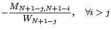

The stochastic
preconditioning is performed by a random walk ``game''
defined as follows. Given a finite undirected connected
graph representing a street map, a walker starts from one of
the nodes, and goes to one of the adjacent nodes every day
with a certain probability. The walker pays an amount of
money, at node  , to a motel for lodging everyday,
until he/she reaches one of the homes, which are a subset of
the nodes. Then the journey is complete and he/she will be
rewarded a certain amount of money, . The problem is to
determine the gain function:
, to a motel for lodging everyday,
until he/she reaches one of the homes, which are a subset of
the nodes. Then the journey is complete and he/she will be
rewarded a certain amount of money, . The problem is to
determine the gain function:
Define the operator
on square matrices
such that it reverses the ordering of the rows and reverses
the ordering of the columns:
. Let the exact LDL factorization of
be
. Again, in
the random walk game, assume that the nodes are in the
natural ordering
, and that node  corresponds to the
row of
corresponds to the
row of  . We prove the
following relations:
. We prove the
following relations:
|  | |||
We argue that the obtained incomplete LDL factors
have better quality, i.e., better accuracy-size tradeoffs,
than the incomplete Cholesky factor obtained by a
traditional method based on Gaussian elimination. Our
argument is based on the fact that each row in the  factor is independently calculated and has no correlation
with the computation of other rows. Therefore we avoid the
error accumulation in traditional incomplete factorization
procedure.
factor is independently calculated and has no correlation
with the computation of other rows. Therefore we avoid the
error accumulation in traditional incomplete factorization
procedure.
We also discuss, by defining a new set of game rules, how this theory can be extended to general matrices, given that the diagonal entries are nonzero.
To evaluate the proposed approach, a set of benchmark matrices are generated by Y. Saad's SPARSKIT by finite-difference discretization of the 3D Laplace's equation with Dirichlet boundary condition. The matrices correspond to 3D grids with sizes , , up to , and a right-hand-side vector with all entries being 1 is used with each of them. We compare the proposed solver, i.e., random walk preconditioned conjugate gradient, against ICCG with ILU(0) and ICCG with ILUT. The complexity metric is the number of double-precision multiplications needed at the iterative solving stage, in order to converge with an error tolerance of . The results show up to 2.1 times speedup over ICCG, and a trend that the larger and denser a matrix is, the more the proposed solver outperforms ICCG.
This talk is partially based on [1], and the implementation is available to the public [2].
[1] H. Qian, S. S. Sapatnekar, A hybrid linear equation solver and its application in quadratic placement, IEEE/ACM International Conference on Computer Aided Design Digest of Technical Papers (2005) 905-909.
[2] H. Qian, S. S. Sapatnekar, The Hybrid Linear Equation Solver Binary Release, available at http://www.ece.umn.edu/users/qianhf/hybridsolver